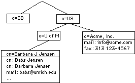
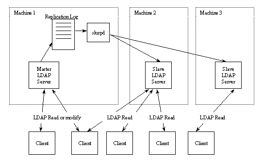
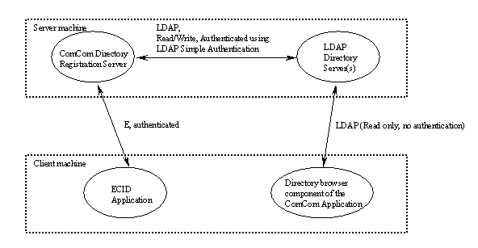

Last updated: 98/08/17 Jeff- Original version.
The purpose of the ComCom directory is to provide a mechanism for looking up names, handles, and ECIDs. Each entry in the directory corresponds to an ECID user. The fields, or attributes, associated with the entry include name, email address, and other person related info provided by the user. Using a client or web based tool it will be possible to search the directory for entries with specific attribute values. The ComCom directory will be implemented using off-the-shelf LDAP directory server software.
What is a directory anyhow? Essentially, a directory has the following characteristics:
The proposed plan for directory support is to use off-the-shelf directory server software, standard protocols, and off-the-shelf protocol implementation. The emerging Internet Draft Standard for directory protocols is the Lightweight Directory Access Protocol (LDAP). There are a few client side protocol implementations of LDAP in C and Java.
Netscape Directory Servers (version 3.0) will be used for the servers, most likely running on Solaris.
JNDI and LDAP will be used by java applications (eg ecid) to access directory servers.
Netscape Directory SDK will be used for native C/C++ client side access on windows.
LDAP is a simplification of the X.500 Directory Access Protocol (DAP). The short story is that X.500 and DAP are heavyweight applications and protocols built on OSI protocols. LDAP was patterned after DAP and designed to get 90% of the DAP functionality with 10% of the cost.
LDAP's directory model is based on the notion of entries. An entry is a collection of required and optional attributes. One of the entry's attributes is an objectclass attribute which is used to provide type specification for the entry. An attribute's is by default case-ignore-string. The complete list of attribute types are:
- binary
- case exact string (case must match during comparisons)
- case ignore string (case is ignored during comparisons)
- telephone number string (like cis but blanks and dashes `- ' are ignored during comparisons)
- distinguished name
The entry is referred to by its Distinguished Name, or DN. The DN is made up of attributes which can be used to refer unambigously to the entry.
LDAP arranges entries in a hierarchical tree structure (though directories can just be flat; twig-like). The classic example is to structure the directory along organizational lines, with people at the leaf nodes of the tree. Here's the obligatory LDAP tree diagram:

In the above diagram the DN for Barbara J Jensen would be "cn=Barbara J Jensen, o=U of M, c=US".
The LDAP protocol spec has been changing. LDAPv3 is the latest version, though its still a Draft Standard. The primary differences of LDAPv3 over v2 are:
Directory servers implement LDAP to allow clients to browse and retrieve directory entries. Typically, the LDAP directory server is designed with a "backend" that takes care of the actual database access, and storing of entries in a file based storage scheme.
A number of LDAP Directory Servers are available. For our purposes, two are worth noting: 1) The University of Michigan Standalone LDAP Directory Server (slapd) and 2) Netscape's Directory Server 3.0. Netscape's directory server is actually based on the UMich code, and in fact three of the original UMich slapd developers are working on the Netscape product.
The UMich package is LDAPv2, is free, and runs on a variety of Unix platforms. There has been some work to port it to NT, but this work appears to be incomplete. The Netscape Directory Server is LDAPv3, costs $995, and runs on Unix and NT.
I won't attempt to give a complete presentation here of LDAP, LDAP servers, and clients. Instead, the reader is directed to the following sites:
We will use Netscape's Directory Server mainly because it is a supported product.
In the Java market, Sun has provided the Java Naming and Directory Interface (JNDI). JDNI is a generalized API for directory-operation semantics. The architecture of JNDI supports several "directory" protocols, one being LDAP. JNDI supports a "service provider" interface enabling a variety of "provider" implementations to plug directly into the JNDI framework and work seamlessly with an application using JNDI. The Javasoft JNDI page is at http://java.sun.com/products/jndi/index.html.
To support LDAP within an E application, we can use JNDI. Some preliminary integration and testing will be neccessary to sort this out. The JNDI api is rather straightforward. The only known issue which will require consideration is the fact that JNDI calls can block on network io. To solve this, we'll have to run the JNDI operations in a seperate thread, with a queue between the cosm code and JNDI. (This is similar to how the JDBC support was integrated.)
Any wrapping of JNDI will be done in a generic way to support multiple directories easily.
Attribute and objectclass specification are specific to the actual directory. Configuration files on the LDAP server are used to specify attributes and objectcalsses.
(Note here about tests published on the web that show typical response data for loaded ldap servers.)
We need to run some tests to find out how the Netscape Directory server performs.
For our application we need to be able to support a large number of clients quering and browsing a directory. The design of LDAP allows for this through the use of master and slave servers, where data at the master is replicated to the slaves. Reads can take place from the master and slave servers, but writes can only be done on the master. When a slave gets a write (modify) request, the slave refers the client to the master server. Finally, any writes to the master are replicated to the slaves through the use of an LDAP based replication mechanism. The following diagram shows the LDAP master/slave model.

Referrals are not directly supported in LDAPv2. UMich implements a referral mechanism by overloading LDAP's error handling mechanism. This style of referrals needs to be tested with the Javasoft LDAP implementation.
The following diagram shows the relationships between the ECID, ComCom, and LDAP directory components.

Most, if not all, of this is off-the-shelf.
TBD.
TBD.
TBD.
TBD.
TBD.
TBD.
TBD. Performance should take into account:
TBD. Testing will include load testing of the server using load test drivers.
TBD.
History of issues raised and resolved during initial design, or during design inspections. Can also include alternative designs, with the reasons why they were rejected
This section of the document is used by the authors and
moderator to store any incomplete information - issues identified
during a design inspection but not yet resolved (the task list),
notes that aren't ready to be put into the main text, etc.